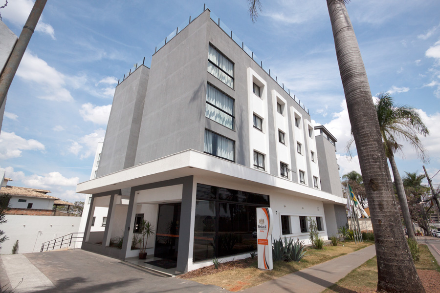
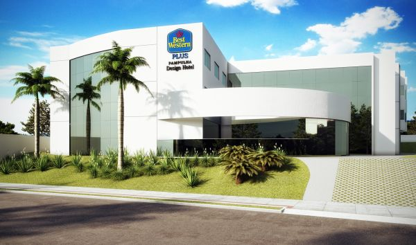
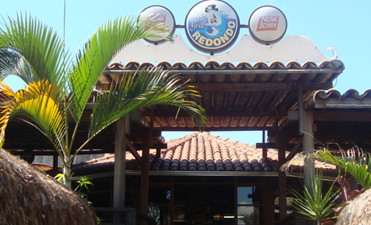
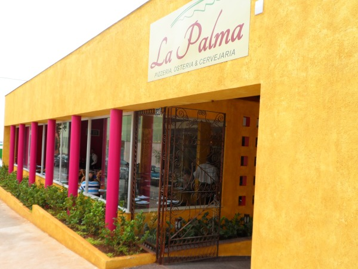

Seu login:
Seu login:
Locais de Realizaçao da Prova
Aqui voce encontra as variedades de hoteis perto do estadio do mineirao.
 Localizado na Avenida das Palmeiras,743-Sao Luiz o hotel fica a 0,5 km do estadio do mineirao Se deseja saber mais sobre este hotel acesse o link Bristol
 Este apart-hotel 3 estrelas em Belo Horizonte, Lourdes, fica perto de Praça da Liberdade
Localização
Em Lourdes, este apart-hotel fica a 15 minutos a pé de Vila Werneck e Praça da Liberdade.SESC Palladium e Museu Inimá de Paula também ficam a 10 minutos. Comodidades do estabelecimento
Comodidades do estabelecimento
Além de um restaurante, este apart-hotel tem piscina externa e uma sauna a vapor.Buffet de café da manhã grátis e Wi-Fi grátis nas áreas comuns também são oferecidos.Outras conveniências são um business center 24 horas, estacionamento com manobrista (sujeito a cobrança) e balcão de recepção 24 horas. Conveniências dos quartos Todos os 48 apartamentos oferecem cozinhas americanas com cooktops e micro-ondas, além de Wi-Fi grátis e TVs LCD com canais a cabo.Os hóspedes também encontrarão salas de estar, minibares e serviço de quarto. Selecione para ver maisSobre o hotel

O bar tem mesas espalhadas por dois terraços e oferece vista frontal da Lagoa da Pampulha, um dos principais pontos turísticos de Belo Horizonte. O recinto ficou famoso.
A casa já tem 60 anos de tradição e bastante procurada por turistas. Entre os famosos pratos estão: Peixada à Moda, Paelha ou um delicioso Bacalhau Gomes de Sá.

La Palma, a mais nova opção gastronômica da cidade. Com a assinatura do Chef Ivo Faria, a casa é um misto de restaurante e pizzaria, e oferece almoço executivo, happy hour com coquetéis, petiscos, pratos e pizzas diferenciadas. Tudo isto em um local despojado, que transforma o La Palma em um ambiente super agradável.
Se deseja saber mais sobre este hotel acesse o link LaPalma